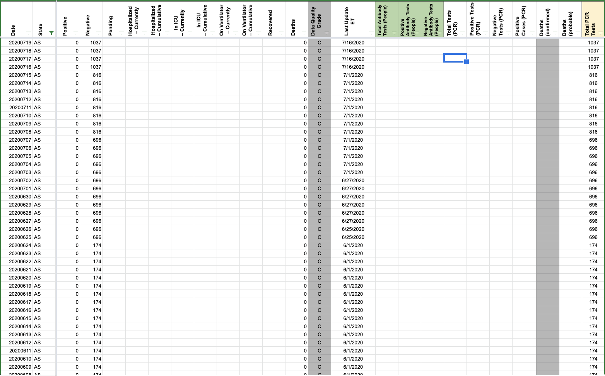
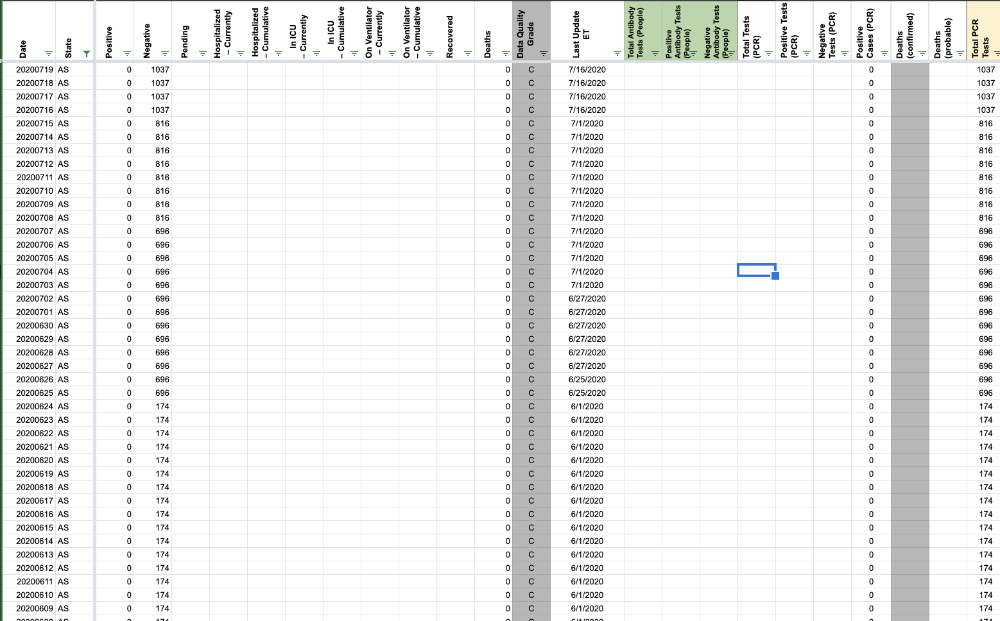
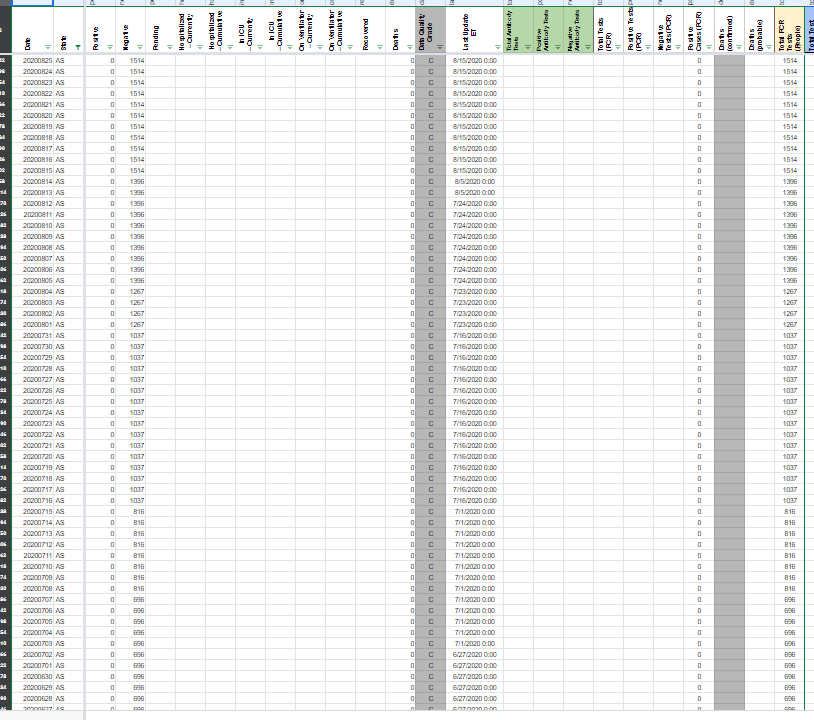
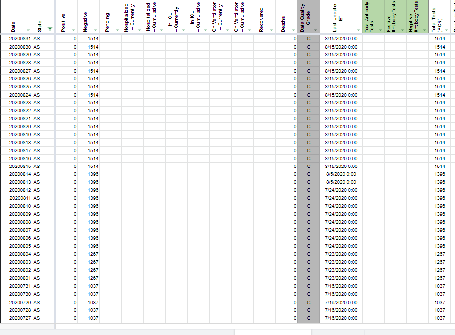

| Date | Number | Title |
|---|---|---|
| August 28, 2020, 6:05 PM PDT | 802 | [AS] total tests (PCR) is specimens, but is stored as people |
| July 13, 2020, 7:14 AM PDT | 613 | [AS] PCL Cases Historicals |
| July 8, 2020, 2:00 PM PDT | 588 | [AS] Reported 816 PCR tests all negative on July 1, need to update historicals |
#802: [AS] total tests (PCR) is specimens, but is stored as people
Issue number 802
theomichel opened this issue on August 28, 2020, 6:05 PM PDT
Labels Data quality
Overview: Tests for American Samoa are going into Total PCR Tests (People), but in fact (according to the annotations sheet) they are specimens.
So we need to:
- update the WS2 instructions to put the testing data for AS into Total Tests (PCR)
- move the data in the data store from Total Tests (PCR) to Total PCR Tests (People)
Comments
#613: [AS] PCL Cases Historicals
Issue number 613
pscsharon opened this issue on July 13, 2020, 7:14 AM PDT
Labels Backfill Missing Data PCL/SVP Historicals
Per America Samoa, they do not have any cases of COVID-19. Recommend we insert 0 instead of leaving fields blank to confirm the zero count.
https://www.samoanews.com/local-news/no-confirmed-coronavirus-cases-identified-american-samoa
Additional Information: https://www.kitv.com/story/42343929/american-samoa-has-no-confirmed-cases-of-covid19 https://www.nytimes.com/2020/05/06/us/coronavirus-american-samoa.html https://www.who.int/americansamoa/our-work https://www.samoanews.com/covid-19
Comments
WS2 pop-up change requested. Confirmed 0 cases since tracking inception and that 0 can be put in PCR confirmed cases to clarify and confirm the absence of cases. 0 case values copied to V in States Daily.
Before:  After: 
#588: [AS] Reported 816 PCR tests all negative on July 1, need to update historicals
Issue number 588
amandafrench opened this issue on July 8, 2020, 2:00 PM PDT
Labels Data quality stale
State or US: [State name, or "US" if this is an issue with country-wide data] [AS] Reported 816 PCR tests all negative on July 1, need to update historicals
Describe the problem A clear and concise description of what the data problem is.
Link to data source Provide links to original data sources that we can refer to, like a state COVID website.
Comments
This issue has been automatically marked as stale because it has not had recent activity. It will be closed if no further activity occurs. Thank you for your contributions!
This issue has been closed because it was stale for 15 days, and there was no further activity on it for 10 days. You can feel free to re-open it if the issue is important, and label it as "not stale."
Total PCR Tests (People)toTotal Tests (PCR)BEFORE 
AFTER 